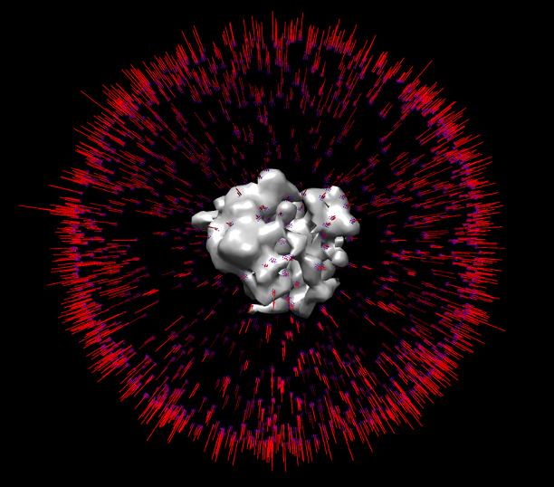

Integrations#
The output of pyTME can be readily integrated with the refinement, classification and averaging procedures of existing software. The following subsections outline such integrations.
RELION#
RELION (for REgularised LIkelihood OptimisatioN) uses a Bayesian approach for refinement of 3D reconstructions and the classification of particles. In simple terms, RELION is used to process cryo-electron microscopy data to create high-resolution three-dimensional structures of biological molecules [1].
The input required by RELION can be readily generated using postprocess.py with output_format relion. For further information refer to the Postprocessing TL;DR Relion section.
postprocess.py \
--input_file output.pickle \
--output_prefix output \
--output_format relion \
--min_distance 20 \
--number_of_peaks 1000 \
-—wegde_mask mask.mrc
Using the generated STAR file, extracted subtomgrams and optimal agnles, an initial averaged reference structure can be generated with RELION from within a shell as follows:
relion_reconstruct \
--3d_rot \
--i ${INPUT_STAR_FILE} \
--o rec.mrc
The output rec.mrc is an average of all subtomograms using the provided angles as-is. If these angles aren’t precise there output average willl like approximate a spherical structure with little features.
This rec.mrc together with the STAR file can be used as input for a relion refinement job. Note this job should be run on the cluster ideally with GPU access. Global and local optimisation can be used. Note that the output directory needs to be created by the user prior to running RELION which will otherwise crash. Global optimisation should be used if the angles are likely of still low quality:
mpirun -n 3 `which relion_refine_mpi` \
--o ${OUTPUT_DIR} \
--ctf \
--auto_refine \
--split_random_halves \
--i ${INPUT_STAR_FILE} \
--ref rec.mrc \
--firstiter_cc \
--ini_high 60 \
--dont_combine_weights_via_disc \
--pool 3 \
--pad 2 \
--particle_diameter 250 \
--flatten_solvent \
--zero_mask \
--oversampling 1 \
--healpix_order 2 \
--auto_local_healpix_order 4 \
--offset_range 5 \
--offset_step 2 \
--sym C1 \
--low_resol_join_halves 40 \
--norm \
--scale \
--j 7 \
--gpu
Local refinement can be used to run further improve the angles locally if these are of good quality:
mpirun -n 3 `which relion_refine_mpi` \
--o ${OUTPUT_DIR} \
--auto_refine \
--split_random_halves \
--i ${INPUT_STAR_FILE} \
--ref rec.mrc \
--firstiter_cc \
--ini_high 60 \
--dont_combine_weights_via_disc \
--pool 3 \
--pad 2 \
--particle_diameter 230 \
--flatten_solvent \
--zero_mask \
--oversampling 1 \
--healpix_order 4 \
--auto_local_healpix_order 4 \
--offset_range 5 \
--offset_step 2 \
--sym C1 \
--low_resol_join_halves 40 \
--norm \
--scale \
--j 7 \
--gpu
A SLURM batch submission script can be found here. The specific queues, run times and other specs need to be adapted to each specific cluster and tech specs.
The output refined average in the {OUTPUT_DIR} can be inspected using third party software such as Chimera. RELION generates an angldist bild file which which can be loaded in Chimera to display the angle distribution after optimization:
{kind=link}

The Global refinement might not converge to a good structure if the angles are not identified from template matching sufficiently well. For demonstration purposes the initial template can be used as reference to ensure the refinement settles into a reasonable minimum during averaging. For better results, further optimization, classification, a much higher particle count and precise CTF correction are needed. We refer users to other workflows such as the Warp-M-Relion pipeline for further improving their resolution.
IMOD#
In the case of particle picking its usually sufficient to look at the translations in a viewer like IMOD. The following assumes that you have IMOD installed and its command line tools linked.
awk -F'\t' '
BEGIN {OFS="\t"}
NR==1 {next}
{print 1, 1, $3, $2, $1}
' output.tsv > coordinates.tsv
point2model -inp coordinates.tsv -ou coordinates.mod -ci 10